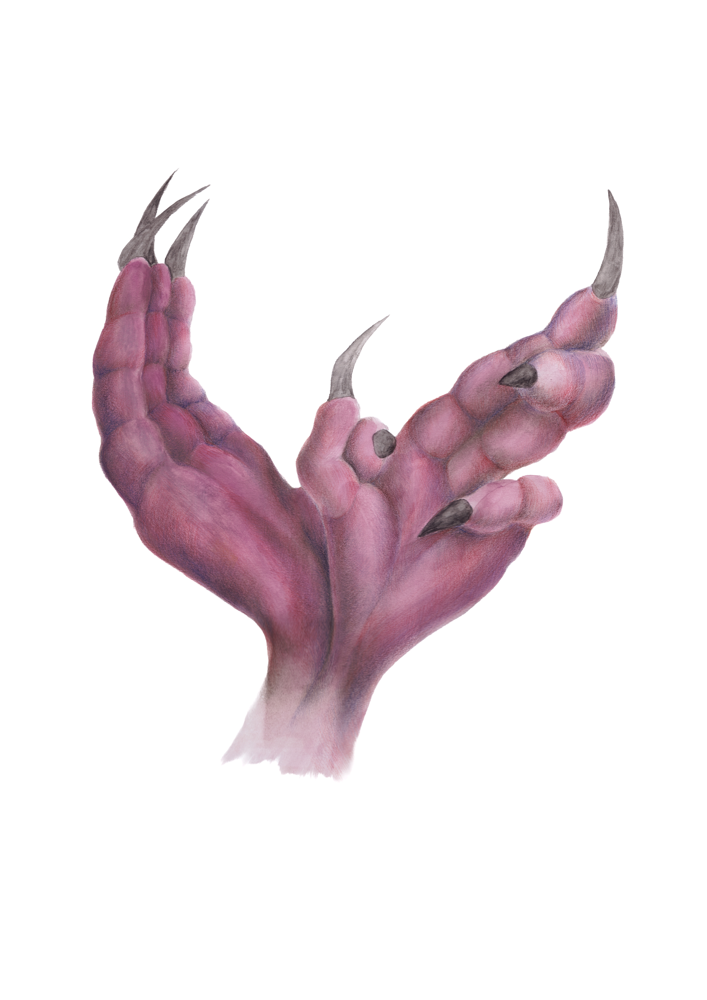
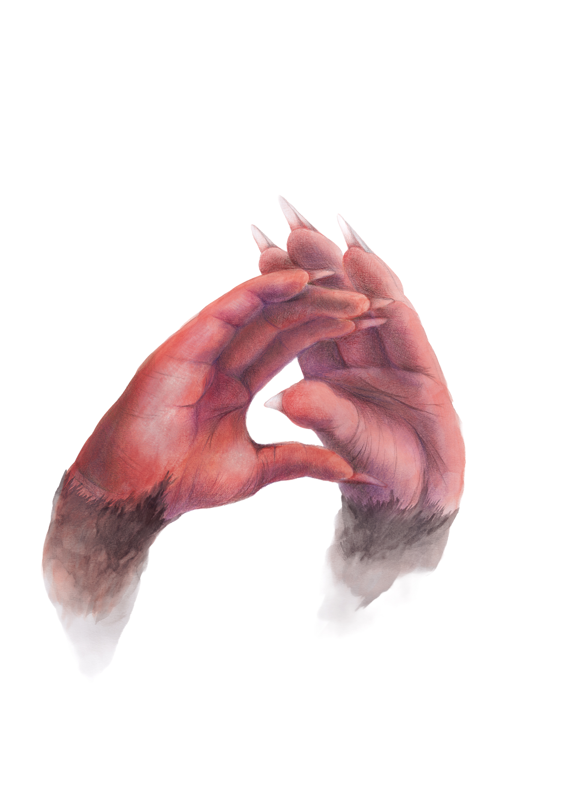
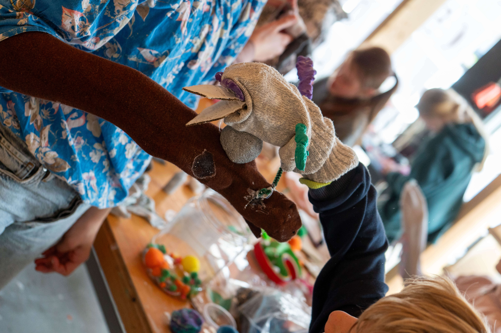

The Morphing Hands
On the liberation day, I think about how we use our bodies to imagine others.
Hands become rat paws, claws, wings.
We play animals—pigeons, rats—creatures we often reject, but who live beside us.
We mimic them to understand, to connect.
A pigeon flying from the chest means peace.
A rat speaking with human hands means maybe we’re not so different.
Peace begins when we realize:
we are bodies of multitudes.
Species, selves, stories—overlapping, merging, coexisting.
Hands become rat paws, claws, wings.
We play animals—pigeons, rats—creatures we often reject, but who live beside us.
We mimic them to understand, to connect.
A pigeon flying from the chest means peace.
A rat speaking with human hands means maybe we’re not so different.
Peace begins when we realize:
we are bodies of multitudes.
Species, selves, stories—overlapping, merging, coexisting.
Medium
Water color and color pencil on paper,
A2
Credits
Sock puppets are made by children at the workshop at NEST
workshop photos by Mina Yee
workshop photos by Mina Yee



